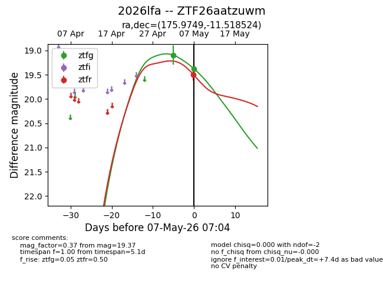
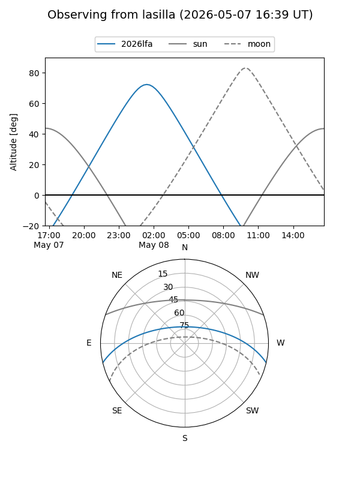
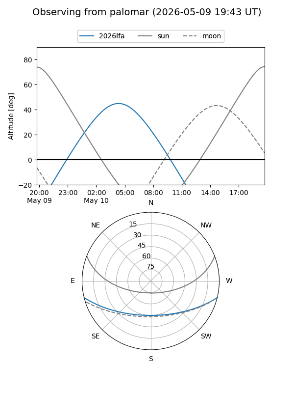
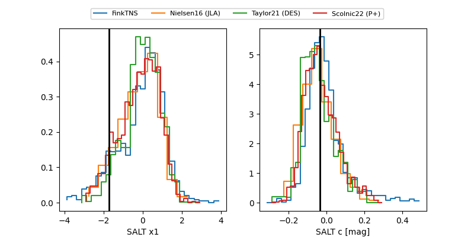

2026lfa
Target 2026lfa at 2026-05-07 07:06
Aliases and brokers:
FINK: link
Lasair: link
ALeRCE: link
TNS: link
YSE: link
alt names
ZTF26aatzuwm (ztf,fink_ztf)
2026lfa (tns,yse)
Coordinates:
equatorial (ra, dec) = 175.9749,-11.51852
equatorial (HMS+DMS) = 11:43:53.99,-11:31:06.69
galactic (l, b) = (277.7488,+48.02339)
Flags:
Photometry:
last ztfg=19.37, ztfr=19.50
2 ztfg, 1 ztfr detections
Lightcurve

Visibility


Additional plots
